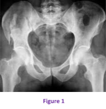

Cas clinique 1
Enfant âgé de 14 ans, sans antécédents pathologiques particuliers, qui s’était présenté aux urgences suite à un accident de la voie publique à point d’impact cranio-facial, abdominal et pelvien.
Réponse :
- - Évaluation de l’état hémodynamique, respiratoire et neurologique du patient
- - Transfert en réanimation en cas d’instabilité hémodynamique
- - Dans les autres cas, pose d’une voie veineuse, et assurer l’antalgie
- - Bilan lésionnel d’un patient polytraumatisé
- - Recherche de complications loco-régionales
- - Bilan radiologique initial
Réponse :
Il s’agit d’une fracture de l’aile iliaque droite classée type II b selon la classification de Torode et Zieg.
Réponse :
On demande un scanner du bassin (figure 2)

Réponse :
On demande un scanner du bassin (figure 2)

Réponse :
Les fractures stables sont le plus souvent traitées par simple repos au lit pendant quelques
jours puis marche en décharge.
Commentaire 1
- Devant tout traumatisme à haute énergie une lésion de l’anneau pelvien doit être
suspectée.
-Le pronostic vital peut être engagé soit par la fracture elle-même (hémorragie
rétro-péritonéale) soit par les lésions associées.
-L’examen clinique devra être complet et scrupuleusement consigné :
* Inspection : contusions, dermabrasions, hématomes, …
* Palpation : repères osseux du bassin, recherche d’une instabilité de l’anneau
pelvien en écartant et rapprochant les épines iliaques antéro-supérieures.
* Examen vasculaire périphérique.
* Examen neurologique et testing de la sensibilité périnéale.
* Bilan urologique : incapacité mictionnelle, globe vésical, hématurie, …
-Examen à la recherche de lésions associées dans le cadre d’un patient
polytraumatisé (crâne, abdomen, thorax, …)
-L’imagerie comportera au minimum une radiographie du bassin de face, complétée
par d’autres examens paraclinique si besoin (scanner pour préciser les lésions de
l’anneau pelvien).
Commentaire 2
Commentaire :
Les lésions traumatiques de la ceinture pelvienne et du sacrum sont rares chez l’enfant (5% des fractures) et leur gravité est liée à la violence du traumatisme.
Les lésions stables siègent surtout au niveau des branches pubiennes, leur diagnostic est simple sur des clichés standards et elles sont rarement associées à des lésions viscérales.
En cas de fractures instables, la tomodensitométrie présente l’intérêt de faire à la fois le bilan osseux précis mais aussi le bilan viscéral.
Les fractures de l’anneau pelvien s’accompagnent des lésions associées dans 75% des cas surtout du tractus uro-génital (1-2% de rupture de l’urètre, 3-5% de rupture de la vessie, 10% de plaies périnéales vaginales et/ou rectales, 3% de lésions vasculaires.
Il s’agit le plus souvent de mécanisme à haute énergie dans un contexte de patient polytraumatisé (accident de la voie publique).
Commentaire 1
- Tout enfant hémodynamiquement instable relèvera de la réanimation en se tenant à disposition pour une éventuelle réduction et stabilisation de la fracture en cas d’hémorragie rétro-péritonéale.
- Pour les patients stables, le traitement sera le plus souvent orthopédique :
*Fractures non déplacées : repos au lit puis marche en décharge.
*Fractures en rotation externe : réduction en hamac.
*Fracture avec ascension d’un hémi-bassin : réduction par traction.
- Seules les lésions instables nécessiteront une réduction (Traction trans-osseuse, réduction à foyer ouvert) et une fixation interne ou externe.
Figure 1

Références
- PETRISOR B.A, BHANDARI M.
Injuries to the pelvic ring: Incidence, classification, associated injuries and mortality rates.
Current Orthopaedics, Elsevier 2005;19:327–333.
- TILE M.
Fractures of the Pelvis and Acetabulum.
Seconde édition.1995. Baltimore: William ET Wikins
- PAPAREL P, CAILLOT J.L, VOIGLIO E.J, FESSY M.H.
Fractures du bassin
Encyclopédie medico-chirurgicale 2007 ; 25-200-G-10
- GEERAERTS T, CHHOR V, CHEISSON G, MARTIN L, BESSOUD B,
Initial management of blunt pelvic trauma patients with haemodynamic instability
Critical Care 2007;11:204.
- VRAHAS M
Classification and biomechanics of pelvic ring injuries
Operative Techniques in Orthopaedics 1997;7(3):162-166.
- CRYER HM, MILLER FB, EVERS BM, ROUBEN LR, SELLIGSON DL.
Pelvic fracture classification: correlation with hemorrhage.
J Trauma 1988;28:973-80.
- NORDIN J.Y. ET AL.
Fractures du bassin.
SOFCOT ,RCO 1997;83(suppl III) :55-108.